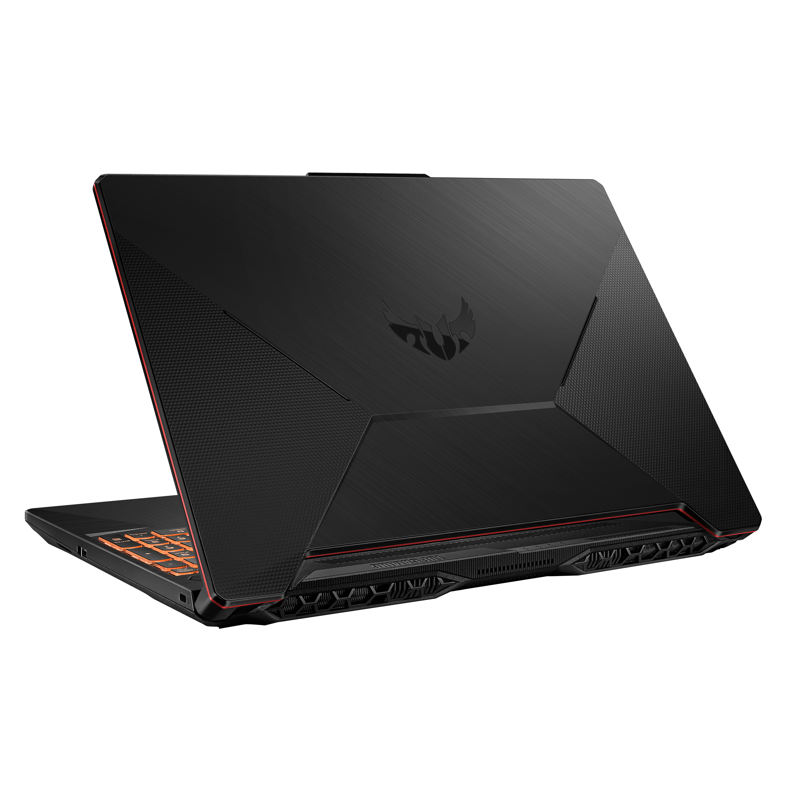

Dipersiapkan dengan daya tahan luar biasa untuk gaming serius, TUF Gaming F15 adalah laptop gaming Windows 10 Home yang dapat membantu Anda untuk meraih kemenangan. Didukung oleh CPU Intel® Core™ i7 Generasi ke-10 terbaru dan GPU GeForce® GTX 1650Ti, gameplay penuh aksi cepat, lancar, dengan dukungan penuh tampilan layar IPS hingga 144Hz. Meskipun memiliki sasis yang lebih kecil dan lebih portabel dari pendahulunya, laptop gaming ini juga dilengkapi baterai 48Wh yang lebih besar untuk masa pakai baterai yang lebih baik. Pendinginan pembersihan mandiri yang efisien berpadu dengan daya tahan kelas militer khas TUF yang teruji dalam pertempuran.
Download Panduan Produk
|  | |||
| Model | FX506LH | FX506LU | FX506LI |
| Operating System | Windows 10 Home - ASUS recommends Windows 10 Pro for business Mutakhirkan ke Windows 11¹ saat tersedia (lihat di bawah). |
Windows 10 Home - ASUS recommends Windows 10 Pro for business Mutakhirkan ke Windows 11¹ saat tersedia (lihat di bawah). |
Windows 10 Home - ASUS recommends Windows 10 Pro for business Mutakhirkan ke Windows 11¹ saat tersedia (lihat di bawah). |
| Processor | Intel® Core™ i5-10300H Processor 2.5 GHZ (8M Cache, up to 4.5 GHz, 4 cores) Intel® Core™ i7-10870H Processor 2.2 GHz (16M Cache, up to 5.0 GHz, 8 cores) |
Intel® Core™ i7-10870H Processor 2.2 GHz (16M Cache, up to 5.0 GHz, 8 cores) | Intel® Core™ i5-10300H Processor 2.5 GHZ (8M Cache, up to 4.5 GHz, 4 cores) Intel® Core™ i7-10870H Processor 2.2 GHz (16M Cache, up to 5.0 GHz, 8 cores) |
"file html ini dibuat untuk menyelesaikan tugas 1 pemrograman web kelas H."
Fawwas Aldy Nurramdhan Kaisar
5025221179
Teknik Informatika ITS
Tes Iframe: